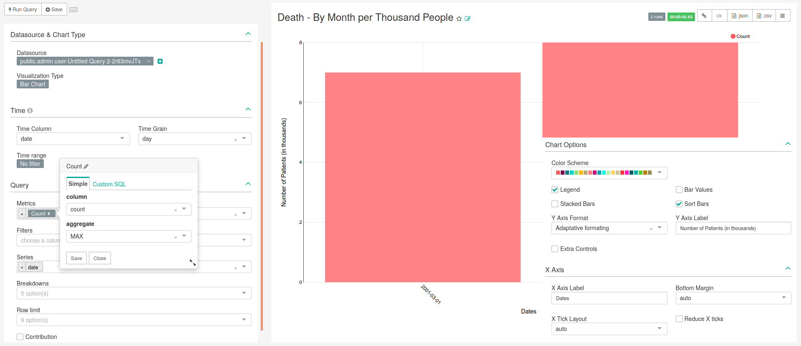
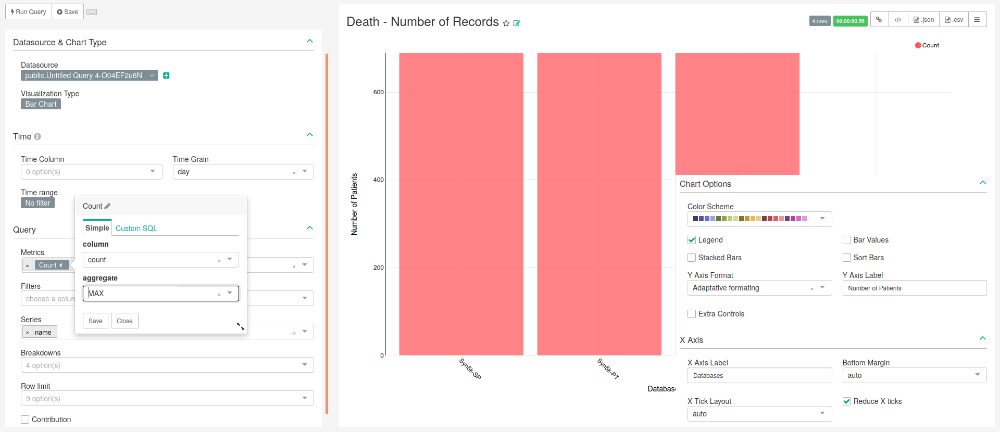

Chapter 7 Death
In this dashboard is present the ‘’Database Type Filter’’, that was detailed in the Chapter General.
7.1 Death - By Month per Thousand People
7.1.1 SQL query
-- 502 Death - By Month per Thousand People
SELECT source.name,
to_date(stratum_1, 'YYYYMM') as Date,
count_value as count,
source.slug
FROM public.achilles_results AS achilles
INNER JOIN public.data_source AS source ON
achilles.data_source_id=source.id
WHERE analysis_id = 502;7.1.2 Chart settings
The main characteristics of this chart are presented in Figure 7.1, being the following:
- Data Tab:
- Visualization Type: Bar Chart
- Time range: No filter
- Metrics: MAX(count) as “Count”
- Filters: Empty
- Series: date
- Breakdowns: Empty
- Row limit: Empty
- Contribution: Not checked
- Costumize Tab:
- Y Axis Label: Number of Patients (in thousands)
- X Axis Label: Databases
- Legend: Checked
- Stacked Bars: Not checked
- Bar Values: Not checked
- Sort Bars: Checked
- Extra Controls: Not checked
- Reduce X ticks: Not checked

Figure 7.1: Settings for creating chart show in thousands the number of death patients in the network (bar chart). Image changed to contain information hidden in the customize menu.
7.2 Death - Number of Records
7.2.1 SQL query
-- 501 Death - Number of Records
SELECT source.name,
count_value as count,
source.slug
FROM public.achilles_results AS achilles
INNER JOIN public.data_source AS source ON
achilles.data_source_id=source.id
WHERE analysis_id = 501;7.2.2 Chart settings
The main characteristics of this chart are presented in Figure 7.2, being the following:
- Data Tab:
- Visualization Type: Bar Chart
- Time range: No filter
- Metrics: MAX(count) as “Count”
- Filters: Empty
- Series: name
- Breakdowns: Empty
- Row limit: Empty
- Contribution: Not checked
- Costumize Tab:
- Y Axis Label: Number of Patients
- X Axis Label: Databases
- Legend: Checked
- Stacked Bars: Not checked
- Bar Values: Not checked
- Sort Bars: Not checked
- Extra Controls: Not checked
- Reduce X ticks: Checked

Figure 7.2: Settings for creating chart show the number of death patients in each database (bar chart). Image changed to contain information hidden in the customize menu.